Chương 5 — Nguồn gốc của vận động
CHƯƠNG 5
Nguồn gốc của Vận động
Yoga đòi hỏi những chuyển động có chủ đích để đi vào và giữ các tư thế khác nhau. Chương này sẽ khám phá cách hệ thần kinh và cơ bắp phối hợp với nhau để điều phối những chuyển động phức tạp. Hiểu biết cơ bản về cách cơ thể tham gia vào quá trình vận động sẽ nâng cao kiến thức của chúng ta về thực hành yoga cũng như khả năng cải thiện sức khỏe và sự an lạc thông qua các phương pháp thực hành chiêm nghiệm này.
PHẦN I VẬN ĐỘNG TỰ Ý: CÁCH NÃO BỘ KIỂM SOÁT CHUYỂN ĐỘNG
Các nhà khoa học đã nỗ lực giải mã cách hệ thần kinh tạo ra chuyển động trong suốt 150 năm qua (Schwartz, 2016). Ngay cả những chuyển động đơn giản như giơ hai tay qua đầu cũng đòi hỏi một bộ não phối hợp hoàn toàn đồng bộ. Hệ thần kinh đồng bộ hóa trình tự, lực, góc độ, hướng và tốc độ của từng cơ tham gia vào chuyển động.
Các hành động có chủ đích, chẳng hạn như nhấc cánh tay, được khởi phát tại thùy trán của não bộ (Hình 5.1). Một phần của thùy trán gọi là vỏ não vận động giúp lập kế hoạch, kiểm soát và thực hiện những chuyển động này. Vỏ não vận động bao gồm ba vùng chính: vỏ não vận động sơ cấp, vỏ não tiền vận động và vùng vận động bổ sung. Mỗi vùng có một vai trò riêng biệt trong việc định hướng vận động tự ý (Hình 5.2).
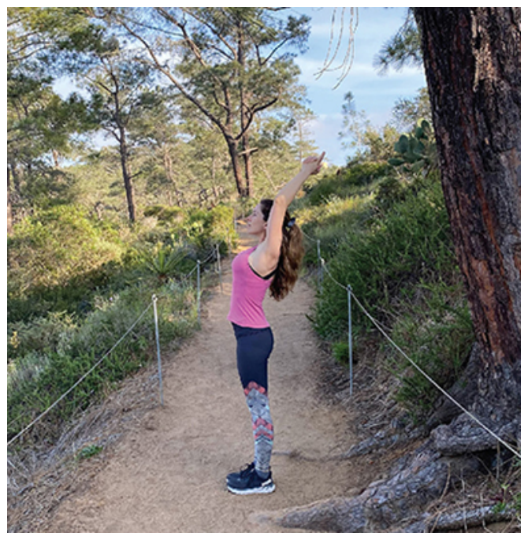
Hình 5.1 Biến thể tư thế Trái núi.
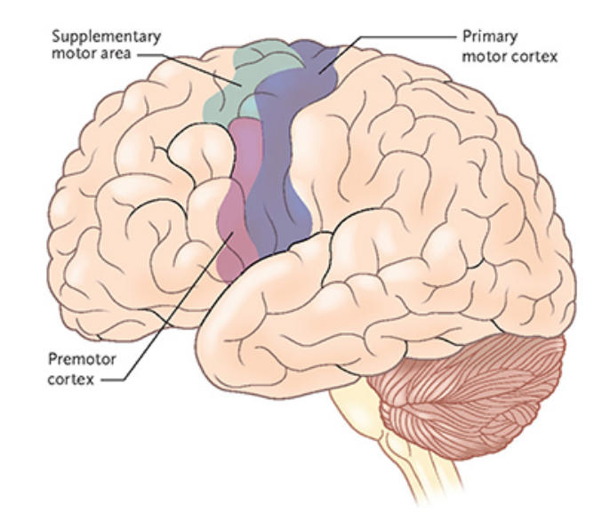
Hình 5.2 Các vùng não chính tham gia vào quá trình vận động.
Vỏ não vận động sơ cấp là vùng não chính tham gia kiểm soát và thực hiện các vận động tự ý (Sanes và Donoghue, 2000). Vùng này chịu trách nhiệm tạo ra các xung thần kinh kích hoạt cơ bắp để vận động. Nó cũng chứa một bản đồ phân bố không gian của các bộ phận cơ thể tham gia vận động, được gọi là “bản đồ vận động” hay hình nhân vận động (motor homunculus) (Hình 5.3). Một số bộ phận trên cơ thể, chẳng hạn như lưỡi và môi, chiếm nhiều diện tích đại diện hơn trong não vì chúng thực hiện các chuyển động tinh vi để nói và ăn.
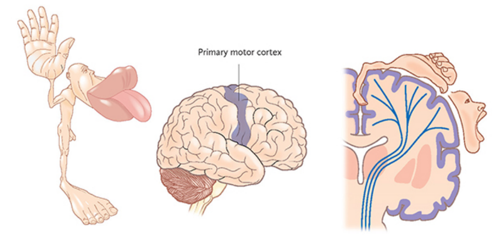
Hình 5.3 Hình nhân vận động.
Bàn tay cũng cần diện tích đại diện lớn hơn trong não để hoạt động hiệu quả (Hình 5.4). Các vi chuyển động ở cơ ngón tay giúp ổn định cơ thể trong các tư thế như Chó úp mặt và tư thế Con quạ. Các cơ khác, chẳng hạn như cơ lõi (core), cũng hỗ trợ ổn định cơ thể, nhưng chúng chỉ giới hạn ở những chuyển động ít tinh chỉnh khắt khe hơn và do đó chiếm ít diện tích đại diện hơn trong vỏ não vận động sơ cấp. Hãy nghĩ theo cách này: có hơn 30 cơ cấu tạo nên bàn tay, trong khi chỉ có năm cơ bụng chính. Bộ não cần nhiều không gian hơn cho các kết nối thần kinh này để điều khiển các cơ bàn tay!
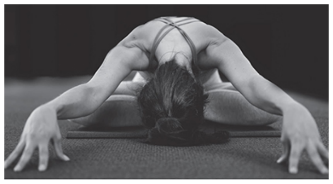
Hình 5.4 Bàn tay chiếm rất nhiều diện tích đại diện trong vỏ não vận động sơ cấp vì chúng liên quan đến nhiều cơ để tạo ra nhiều loại chuyển động phức tạp.
Nguồn: Conscious Design trên Unsplash.
Các tuyến đường thông tin cho vận động
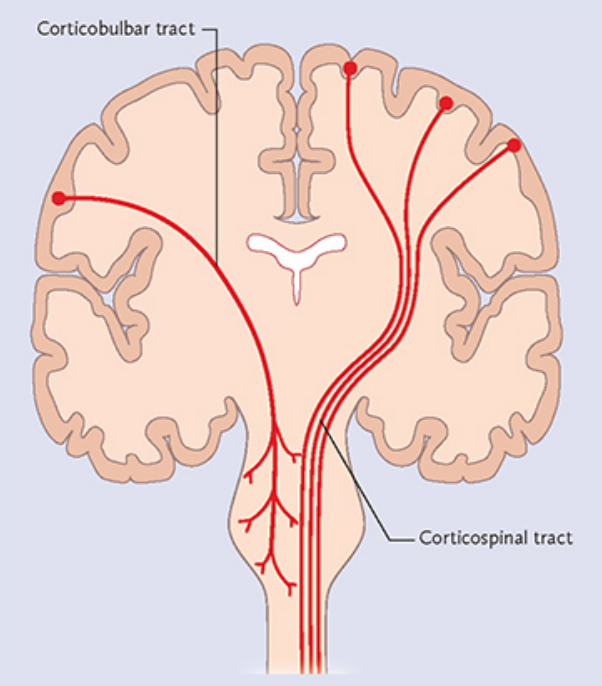
Hình 5.5 Bó vỏ - hành và bó vỏ - tủy.
Các tín hiệu truyền từ vỏ não vận động sơ cấp đi dọc theo một trong hai tuyến đường thông tin: bó vỏ - tủy (corticospinal tract) hoặc bó vỏ - hành (corticobulbar tract). Bó vỏ - tủy mang tín hiệu từ não đến tủy sống để truyền thông tin về chuyển động của cơ thể, trong khi bó vỏ - hành gửi thông tin đến thân não liên quan đến chuyển động của đầu, cổ và cơ thể (The Brain from Top to Bottom, 2022).
Các sợi trục trong bó vỏ - tủy bắt chéo qua đường giữa cơ thể tại hành não trong thân não và tiếp tục đi xuống tủy sống. Do đó, bán cầu não phải nhìn chung chịu trách nhiệm cho chuyển động ở bên trái cơ thể và ngược lại.
Sự thật thú vị: Hươu cao cổ có các sợi trục trong bó vỏ - tủy THẬT SỰ rất dài. Thực tế, chúng có thể dễ dàng đạt tới 2,6 mét (8,5 feet) vì chúng kéo dài từ não suốt dọc đến tận cuối tủy sống (Badlangana et al., 2007).
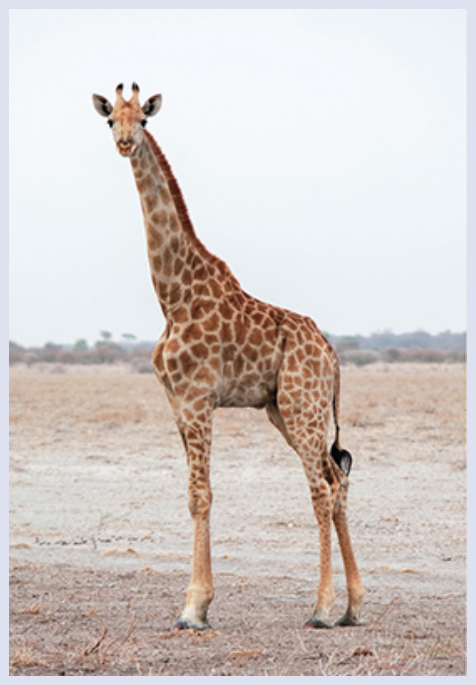
Hình 5.6 Một con hươu cao cổ ở Botswana.
Nguồn: Thomas Evans trên Unsplash.
Vỏ não tiền vận động nằm ngay phía trước vỏ não vận động sơ cấp và hỗ trợ tích hợp thông tin cảm giác với thông tin vận động để chuẩn bị cho một chuyển động. Vỏ não tiền vận động gửi tín hiệu đến vỏ não vận động sơ cấp, thân não và tủy sống nhằm lập kế hoạch cho cơ thể thực hiện một vận động tự ý.
Tổn thương vỏ não tiền vận động có thể dẫn đến nhiều hệ quả tưởng chừng kỳ lạ. Chẳng hạn, một người bị đột quỵ ở vỏ não tiền vận động có thể không bị liệt, nhưng họ có thể gặp khó khăn khi thực hiện một hành động thuần thục mà trước đây từng làm được; não của họ đang gặp trục trặc trong việc lập kế hoạch cho hành động được yêu cầu (Freund và Hummelsheim, 1985). Họ cũng có thể bị suy giảm khả năng cử động ngón tay và bàn tay ở phía đối diện cơ thể hoặc gặp khó khăn trong việc tích hợp thông tin cảm giác cần thiết để thực hiện một chuyển động.
Vỏ não tiền vận động cũng bao gồm vùng vận động bổ sung (SMA), một trong những vùng não liên quan đến vận động ít được hiểu rõ nhất. Các tế bào thần kinh của vùng này kết nối trực tiếp với tủy sống, nên người ta cho rằng nó đóng vai trò kiểm soát chuyển động. Ngoài việc hỗ trợ kiểm soát tư thế, SMA còn điều phối các chuyển động phối hợp hai tay (Dijkstra et al., 2020; Brinkman, 1981). Ví dụ, khi chắp hai tay lại để thực hiện tư thế Chiếc ghế vặn mình, SMA phải hoạt động hết công suất (Hình 5.7). SMA cũng có thể tham gia vào các chuỗi chuyển động liên tiếp, chẳng hạn như thực hiện bài Chào mặt trời (Verwey, Lammens và Honk, 2002). Bất chấp những tiến bộ trong khoa học thần kinh, vai trò chính xác của SMA vẫn chưa được biết rõ hoàn toàn.
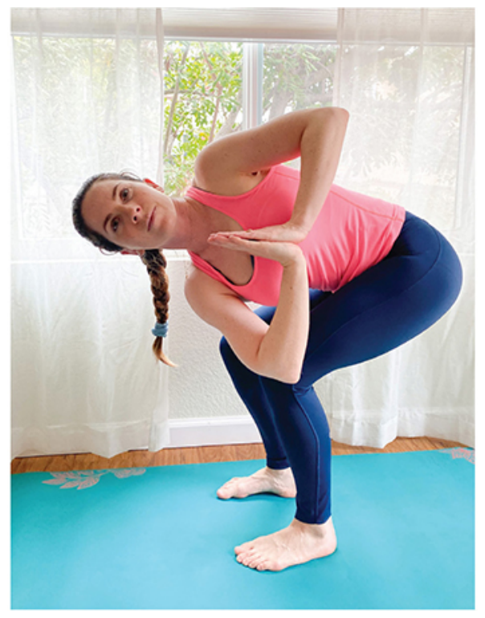
Hình 5.7 Biến thể tư thế Chiếc ghế vặn mình.
Điểm chính cần nhớ
Vỏ não vận động sơ cấp là vùng não chính tham gia kiểm soát và thực hiện các vận động tự ý. Nó chứa một biểu diễn không gian của các bộ phận cơ thể tham gia vận động gọi là “bản đồ vận động” hay “hình nhân vận động”. Vỏ não tiền vận động hỗ trợ tích hợp thông tin cảm giác và vận động để chuẩn bị cho một chuyển động. Vùng vận động bổ sung đóng vai trò kiểm soát chuyển động, tư thế và điều phối chuyển động hai tay.
Các vùng não khác kiểm soát vận động tự ý: Hai vùng não bổ sung tham gia vào quá trình vận động là hạch nền và tiểu não.
HẠCH NỀN: Hạch nền (basal ganglia) là một nhóm các tế bào thần kinh nằm sâu bên trong não giúp kiểm soát vận động tự ý. Những tế bào thần kinh này ức chế các mạch thần kinh đang cố gắng khởi phát những chuyển động cạnh tranh (Hauber, 1998). Hạch nền giúp các chuyển động diễn ra trơn tru, không bị lỗi.
Hạch nền không phải lúc nào cũng hoạt động bình thường, điều này có thể dẫn đến một số bệnh lý thần kinh khác nhau. Bệnh Parkinson xảy ra khi hạch nền không còn sản xuất đủ chất dẫn truyền thần kinh dopamine. Người mắc bệnh Parkinson thường có biểu hiện run rẩy và các cử động mất kiểm soát. Khi thuốc không còn hiệu quả, một số bệnh nhân Parkinson giai đoạn tiến triển có thể được điều trị bằng kích thích não sâu. Phẫu thuật này liên quan đến việc cấy một thiết bị kích thích thần kinh gửi các xung điện tới một phần cụ thể của hạch nền nhằm thúc đẩy hoạt động não bình thường, giúp vận động tốt hơn.
TIỂU NÃO: Tiểu não giúp điều phối, căn chỉnh thời gian chuyển động, tạo sự chính xác, hiệu chỉnh chuyển động cũng như lưu giữ trí nhớ vận động (Fine, Ionita và Lohr, 2002) (Hình 5.8). Vào thế kỷ 19, nhà sinh lý học người Pháp Marie-Jean-Pierre Flourens đã phát hiện ra tiểu não đóng vai trò tối quan trọng đối với sự phối hợp vận động bằng cách cắt bỏ tiểu não của chim bồ câu (Kwon, 2020). Ông quan sát thấy những con chim gặp vấn đề về thăng bằng sau khi mất tiểu não. Chúng đi lại loạng choạng như thể bị say rượu. Sau này, các bác sĩ nhận thấy những bệnh nhân người bị tổn thương tiểu não, có thể do khối u hoặc đột quỵ, cũng có biểu hiện tương tự.
Tiểu não tiếp nhận thông tin về chuyển động từ nhiều phần của não bộ cũng như từ các thụ thể ở cơ, khớp và gân. Nó hoạt động giống như một kiểm soát viên không lưu, điều hướng chuyển động liên quan đến vị trí các chi, tốc độ di chuyển và bất kỳ chướng ngại vật nào có thể xuất hiện trên đường đi phía trước.
Tiểu não cũng chịu trách nhiệm hiệu chỉnh chuyển động nhanh chóng để ngăn ngừa té ngã. Chẳng hạn, ta rất dễ vấp phải một cục gạch yoga nằm lạc chỗ khi rời lớp học. Thay vì ngã nhào, cơ thể nhanh chóng điều chỉnh để sửa lại chuyển động. Tiểu não giữ vai trò then chốt trong quá trình hiệu chỉnh chuyển động này. Tiểu não cũng hỗ trợ các vi điều chỉnh nhằm duy trì thăng bằng trong những tư thế khó như tư thế Vũ công (Hình 5.9).
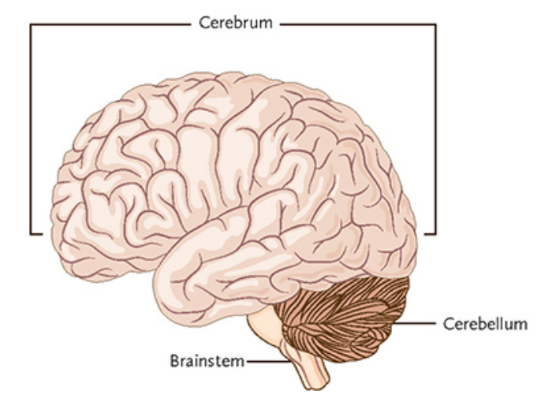
Hình 5.8 Tiểu não.
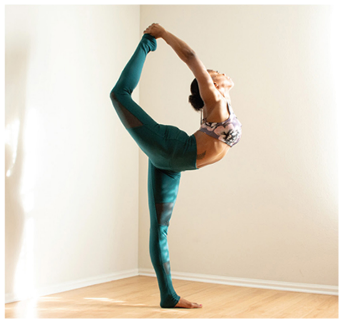
Hình 5.9 Tư thế Vũ công.
Nguồn: Madison Lavern trên Unsplash.
Các tế bào chuyên biệt của tiểu não: Tiểu não chứa các tế bào thần kinh chuyên biệt gọi là tế bào Purkinje. Những tế bào thần kinh phân nhánh tinh vi này tham gia kiểm soát vận động cũng như quá trình học tập. Tế bào Purkinje điều hòa tốc độ giao tiếp giữa các tế bào thần kinh để điều phối những chuyển động quan trọng, chẳng hạn như cử động bàn tay (Minai, 2014). Đừng nhầm lẫn những tế bào này với các sợi Purkinje nằm trong tim!
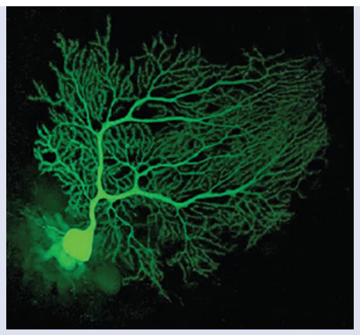
Hình 5.10 Tế bào Purkinje từ tiểu não.
Nguồn: Maryann Martone et al., CCDB/NCMIR/UC San Diego, CCA 3.0. Từ:
http://www.cellimagelibrary.org/images/CCDB_3
Tiểu não cũng đóng một vai trò trong việc học vận động. Học vận động là quá trình học một chuyển động mới, sau đó có thể được lưu trữ dưới dạng trí nhớ vận động, hay còn gọi là trí nhớ cơ bắp. Loại trí nhớ này cho phép gợi lại một chuyển động hoặc sự phối hợp vận động cụ thể để thực hiện các hoạt động như đi xe đạp, ném bóng hoặc chơi nhạc cụ nhiều năm sau khi học cách làm, mà không cần nhiều suy nghĩ nhận thức. Các nhà khoa học thần kinh chưa biết chính xác quá trình này diễn ra thế nào hoặc trí nhớ cơ bắp được lưu trữ ở đâu, nhưng họ tin rằng tiểu não là một trong những vùng não chính tham gia.
Chuỗi Chào mặt trời và tiểu não: Để chào mừng khai trương một phòng tập yoga mới, các học viên đôi khi được mời tham gia nghi thức thực hành 108 vòng Chào mặt trời. Con số 108 được xem là thiêng liêng và tượng trưng cho sự toàn vẹn của vạn vật (Yoga Journal, 2021). Khi thực hành những chuyển động lặp đi lặp lại như vậy, trí nhớ cơ bắp sẽ kích hoạt và dẫn dắt cơ thể xuyên suốt buổi tập. Trí nhớ cơ bắp của chuỗi Chào mặt trời cho phép người tập tập trung vào hơi thở thay vì phải nghĩ xem đặt tay hay chân ở đâu. Khả năng lướt qua chuỗi Chào mặt trời một cách trôi chảy mà không cần suy nghĩ nhiều phần lớn là nhờ vào tiểu não.
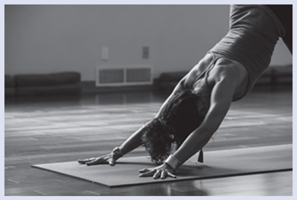
Hình 5.11 Tư thế Chó úp mặt.
Nguồn: Ginny Rose Stewart trên Unsplash.
Điểm chính cần nhớ
Hạch nền là một nhóm các tế bào thần kinh giúp các chuyển động diễn ra trơn tru, không bị lỗi. Rối loạn chức năng hạch nền có thể dẫn đến một số bệnh lý thần kinh, bao gồm bệnh Parkinson. Tiểu não giúp điều phối, căn chỉnh thời gian chuyển động, tạo sự chính xác, hiệu chỉnh chuyển động cũng như lưu giữ trí nhớ vận động. Nó chứa các tế bào chuyên biệt gọi là tế bào Purkinje.
Tín hiệu từ não đến cơ thể: Mặc dù não bộ chỉ đạo hầu hết các chuyển động, nhưng chính các tế bào thần kinh vận động (nơ-ron vận động) mới là yếu tố biến mọi thứ thành hiện thực. Những tế bào thần kinh chuyên biệt này kéo dài từ não hoặc tủy sống đến từng sợi cơ riêng lẻ để truyền đạt chỉ dẫn về việc cơ nào cần cử động và cử động ra sao.
Các tế bào thần kinh vận động truyền chỉ dẫn đến sợi cơ tại khớp thần kinh cơ (neuromuscular junction) (Hình 5.12). Tại đây, các tín hiệu điện kích thích giải phóng chất dẫn truyền thần kinh acetylcholine, cùng với các chất khác. Sau đó, acetylcholine di chuyển qua khe synap và gắn vào các thụ thể trên cơ, khiến cơ co lại và tạo ra chuyển động.
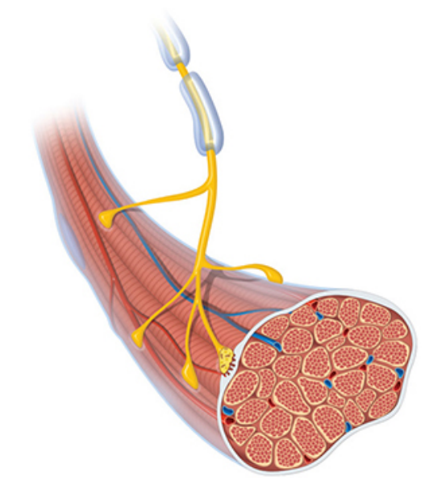
Hình 5.12 Khớp thần kinh cơ.
Dây thần kinh tọa: Dây thần kinh dài nhất và lớn nhất trong cơ thể là dây thần kinh tọa (sciatic nerve). Dây thần kinh tọa tách nhánh từ vùng thắt lưng đi vào hông và chạy dọc xuống chân, phân nhánh thành các dây thần kinh khác kéo dài tới tận các ngón chân. Nó chứa các tế bào thần kinh vận động giúp cơ bắp ở chân và bàn chân cử động, cũng như các tế bào thần kinh cảm giác để gửi tín hiệu cảm giác từ chân và bàn chân lên não. Ở một người cao lớn, sợi trục của dây thần kinh tọa có thể dài hơn một mét (3 feet) (Muzio và Cascella, 2021). Ở đoạn dày nhất, dây thần kinh tọa dày xấp xỉ ngón tay cái của bạn!
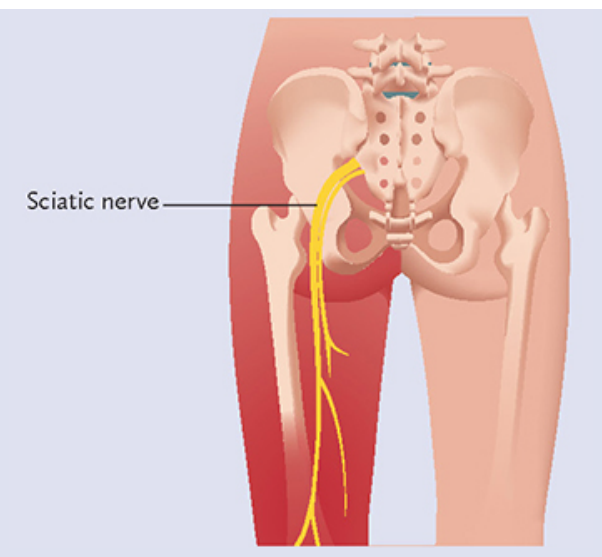
Hình 5.13 Dây thần kinh tọa kéo dài từ vùng thắt lưng xuống dưới đầu gối, nơi nó phân nhánh thành các dây thần kinh khác đi tới ngón chân.
Dây thần kinh tọa đôi khi có thể bị chèn ép hoặc viêm trong một tình trạng gọi là đau thần kinh tọa (sciatica). Đau thần kinh tọa thường gây ra cơn đau lan từ vùng thắt lưng xuống chân và có thể dẫn đến các vấn đề về cử động chân và bàn chân. Tình trạng này có thể do thoát vị đĩa đệm gây ra; tuy nhiên, gần 70 phần trăm tổng số ca đau thần kinh tọa là do cơ hình lê (piriformis) ở vùng hông bị căng cứng chèn ép lên dây thần kinh (Filler et al., 2005).
Yoga có thể giúp giảm nhẹ các triệu chứng đau thần kinh tọa do cơ hình lê quá căng. Tuy nhiên, điều quan trọng là không được kéo giãn cơ này quá mức, vì làm vậy có thể khiến các triệu chứng trầm trọng hơn. Dưới đây là ba tư thế có thể giúp kéo dài và thư giãn cơ hình lê để giảm đau và khó chịu.
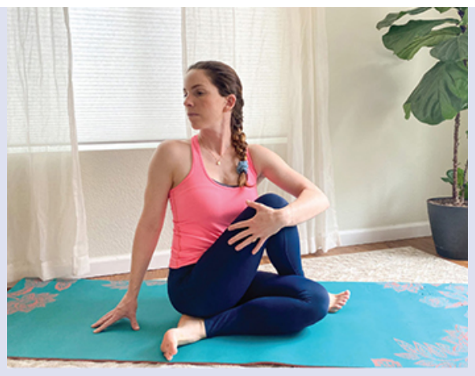
Hình 5.14 Tư thế ngồi vặn mình đơn giản.
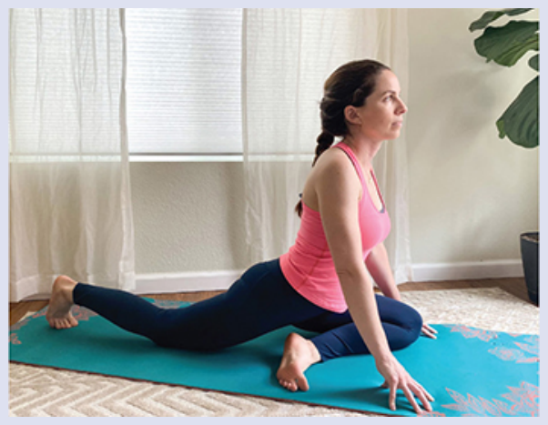
Hình 5.15 Tư thế Bồ câu giãn hông.
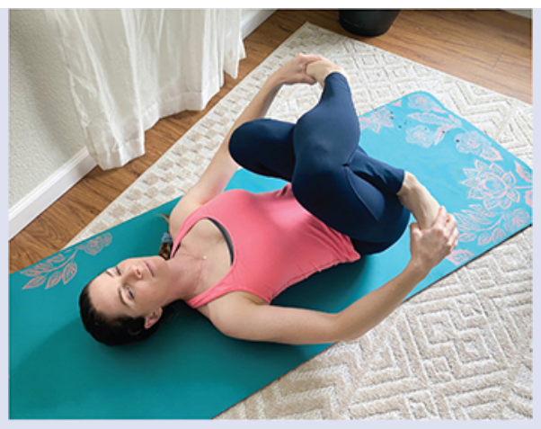
Hình 5.16 Biến thể giãn cơ hình lê.
PHẦN II VẬN ĐỘNG KHÔNG TỰ Ý: KHÔNG CẦN ĐẾN NÃO
Các bác sĩ thường dùng một chiếc búa cao su mềm để kiểm tra phản xạ gân bánh chè (phản xạ đầu gối). Chuyển động nhanh này mang tính tự động và không đòi hỏi bất kỳ suy nghĩ nhận thức nào. Thực tế, chuyển động này hoàn toàn không có sự tham gia của não bộ.
Thay vào đó, các thụ thể cảm giác ở đầu gối tiếp nhận lực tác động của chiếc búa (làm căng gân) và gửi tín hiệu đến một tế bào thần kinh cảm giác — loại tế bào thần kinh phát hiện và phản ứng với môi trường. Tế bào thần kinh cảm giác sau đó truyền thông tin này đến tủy sống, nơi một tế bào thần kinh vận động tiếp nhận tín hiệu và lập tức làm co cơ, bỏ qua hoàn toàn não bộ (Hình 5.17).
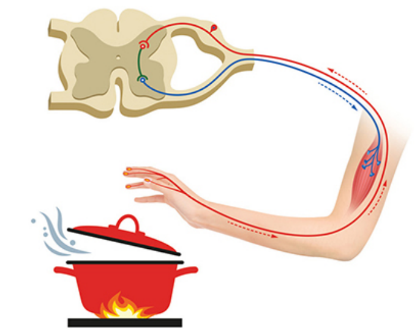
Hình 5.17 Cung đường của một phản xạ.
Phản xạ là một cơ chế sinh tồn. Chẳng hạn, phản xạ rút lui có thể nhanh chóng rụt tay khỏi một chiếc nồi đang nóng bỏng, và phản xạ giật mình giúp chúng ta nhảy tránh khỏi một mối nguy hiểm tiềm tàng.
Điểm chính cần nhớ
Các tế bào thần kinh vận động truyền thông tin từ não hoặc tủy sống để điều hòa hoạt động của cơ bắp phục vụ vận động. Khớp thần kinh cơ là nơi các tế bào thần kinh vận động truyền chỉ dẫn về chuyển động đến sợi cơ. Dây thần kinh tọa là dây thần kinh dài nhất trong cơ thể, giúp các cơ ở chân và bàn chân cử động cũng như cảm nhận cảm giác. Nó có thể dễ dàng bị chèn ép hoặc viêm trong tình trạng gọi là đau thần kinh tọa. Phản xạ là một chuyển động nhanh, tự động và không có sự tham gia của não bộ.
PHẦN III CẢM THỤ BẢN THỂ (PROPRIOCEPTION)
Hãy tưởng tượng bạn tập yoga khi nhắm mắt. Ngay cả khi không có thị giác, cơ thể vẫn có thể tạo ra hình dáng và chuyển động của các tư thế yoga khác nhau. Khả năng nhận thức được vị trí và chuyển động của cơ thể mình được gọi là cảm thụ bản thể (proprioception).
Cảm thụ bản thể dựa vào ba hệ thống cảm giác chính. Đầu tiên là các thụ thể chuyên biệt nằm trong cơ, khớp và gân, có nhiệm vụ gửi tín hiệu lên não về vị trí cơ thể. Hệ thống thăng bằng, còn gọi là hệ thống tiền đình, nằm ở tai trong giúp truyền thông tin về sự xoay, gia tốc, trọng lực và vị trí. Và mặc dù cảm thụ bản thể có thể diễn ra mà không cần thị lực, hệ thống thị giác vẫn rất hữu ích trong việc gửi các tín hiệu hình ảnh về vị trí cơ thể. Ba hệ thống này phối hợp với nhau để cung cấp cho não sự hiểu biết về vị trí của cơ thể trong không gian và cách cơ thể đang di chuyển.
Bộ não tiếp nhận tín hiệu từ ba hệ thống cảm giác này và gửi chỉ dẫn ngược lại ra các cơ để điều phối chuyển động. Ví dụ, khả năng giữ thăng bằng đòi hỏi rất nhiều vi điều chỉnh, vốn phụ thuộc nhiều vào tín hiệu từ tiểu não và thân não.
Cảm thụ bản thể có thể diễn ra cả ở mức độ có ý thức lẫn vô thức. Cảm thụ bản thể có ý thức được sử dụng để hỗ trợ các chuyển động phức tạp, những chuyển động đòi hỏi sự tập trung và suy nghĩ để hoàn thành, chẳng hạn như thực hiện tư thế uốn lưng (backbend). Cảm thụ bản thể vô thức lại quan trọng trong việc điều phối các chuyển động ít phức tạp hơn, như duy trì tư thế và đi bộ (Johnson et al., 2008). Cảm thụ bản thể vô thức có thể diễn ra nhanh chóng để giúp điều phối cơ thể.
Nhiều tư thế yoga dựa vào hệ thống cảm thụ bản thể để tạo ra hình dáng và chuyển động cho cơ thể. Các nhà nghiên cứu phát hiện ra rằng tập yoga có thể cải thiện khả năng cảm thụ bản thể và giữ thăng bằng ở những người mắc rối loạn thần kinh cũng như người khiếm thị (Cherup et al., 2020; Mohanty, Pradhan và Nagathna, 2014).
Các thụ thể cảm thụ bản thể: Nằm rải rác khắp các cơ, thoi cơ (muscle spindles) là các thụ thể cảm thụ bản thể giúp phát hiện sự thay đổi về chiều dài cơ (mức độ cơ bị kéo giãn) và tốc độ thay đổi chiều dài cơ (Matthews, 1964). Thoi cơ chuyển thông tin này đến các tế bào thần kinh cảm giác, từ đó gửi tín hiệu về hệ thần kinh trung ương liên quan đến chuyển động của cơ.
Bên trong gân và khớp là các thụ thể cảm thụ bản thể được gọi lần lượt là cơ quan gân Golgi và thụ thể khớp. Cơ quan gân Golgi cảm nhận thông tin về độ căng cơ — thước đo mức độ gắng sức — trong khi các thụ thể khớp cung cấp thông tin về vị trí của khớp.
Hệ thống thăng bằng: Cũng có những cảm biến cực kỳ chính xác nằm ở tai trong tiếp nhận thông tin về thăng bằng và định hướng không gian. Biết được hướng nào là lên hay xuống nghe có vẻ là một nhiệm vụ đơn giản, nhưng thực chất lại khá phức tạp (Hình 5.18).
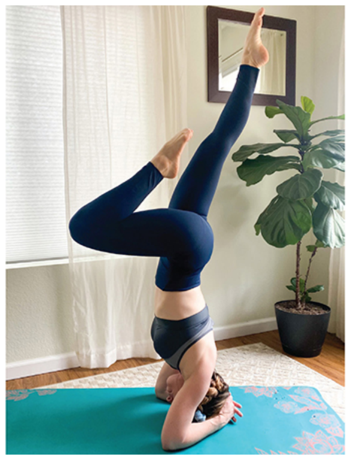
Hình 5.18 Giữ thăng bằng lộn ngược đòi hỏi nhiều hệ thống cảm giác phối hợp cùng nhau nhưng phụ thuộc chủ yếu vào hệ thống tiền đình, hệ thống cảm nhận định hướng không gian và trọng lực.
Mặc dù tai trong hỗ trợ thính giác, nó cũng đóng vai trò tối quan trọng trong việc giải mã định hướng không gian như một phần của hệ thống tiền đình, còn được gọi là “trung tâm thăng bằng” hay “hệ thống thăng bằng”. Hệ thống tiền đình chủ yếu giúp chúng ta phát hiện chuyển động của đầu. Nó cũng hỗ trợ cung cấp cho não thông tin về vị trí và hướng của đầu nhằm duy trì thăng bằng và tư thế, cũng như giữ ổn định đầu trong quá trình vận động.
Hệ thống tiền đình chứa nhiều cấu trúc, nhưng hai cấu trúc chính nằm trong mê đạo tiền đình bao gồm các ống bán khuyên và cơ quan thạch nhĩ (otolith organs). Có ba ống bán khuyên chứa dịch cùng các tế bào lông nhỏ (Hình 5.19). Mỗi ống được định hướng theo một mặt phẳng khác nhau để phát hiện một trong ba loại chuyển động xoay của đầu: gật lên xuống, lắc sang hai bên và nghiêng trái phải (Hình 5.20–5.22).
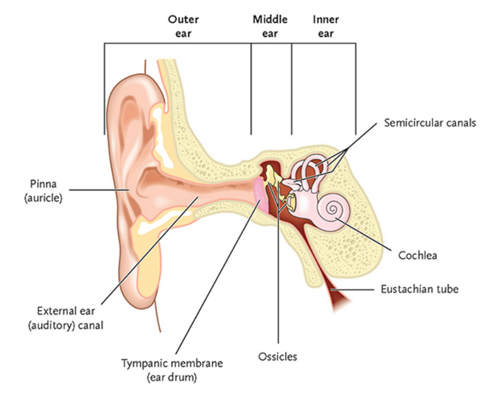
Hình 5.19 Các ống bán khuyên bên trong tai.
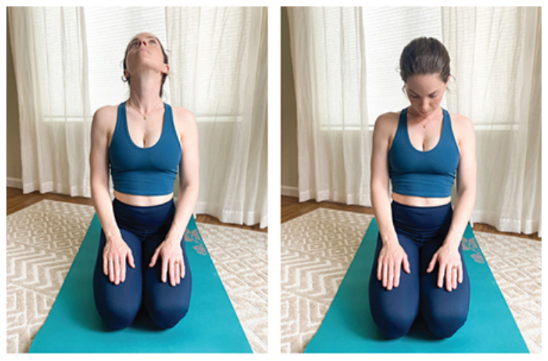
Hình 5.20 Gật đầu lên xuống.
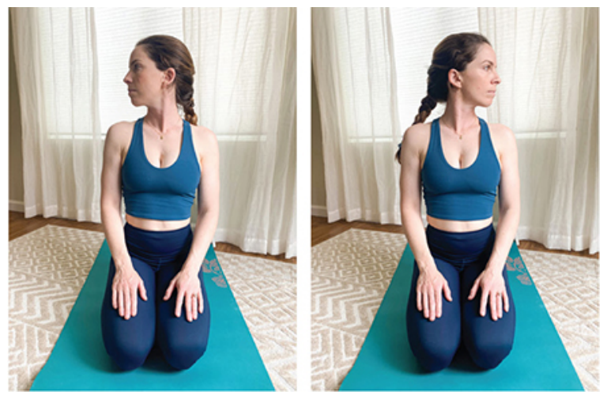
Hình 5.21 Lắc đầu sang hai bên.
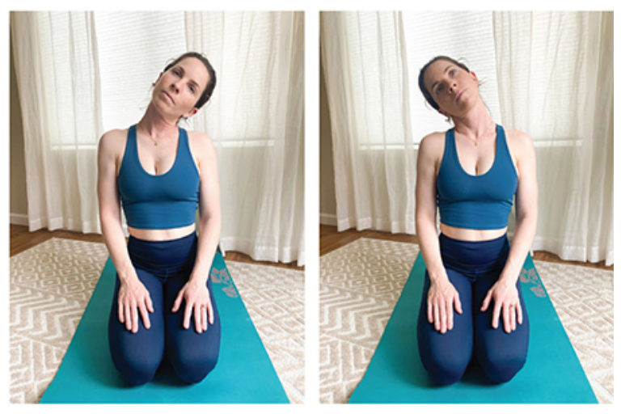
Hình 5.22 Nghiêng đầu trái phải.
Khi đầu đổi hướng, chất dịch gọi là nội dịch (endolymph) trong các ống bán khuyên sẽ dịch chuyển, báo hiệu cho các tế bào lông biết đang có chuyển động theo một hướng nhất định. Sau đó, các tế bào lông truyền thông tin này đến dây thần kinh tiền đình (một nhánh của dây thần kinh sọ tiền đình – ốc tai), gửi tín hiệu lên não về chuyển động và định hướng.
Tai trong cũng chứa các cấu trúc nhỏ gọi là cơ quan thạch nhĩ giúp chúng ta cảm nhận chuyển động tiến và lùi (gia tốc thẳng) cũng như trọng lực. Chúng hoạt động rất giống cách các ống bán khuyên phát hiện chuyển động, đều liên quan đến chất dịch và tế bào lông. Cả cơ quan thạch nhĩ và ống bán khuyên đều cần thiết để não bộ hiểu được vị trí của cơ thể.
So sánh cơ quan thạch nhĩ với các ống bán khuyên: Thạch nhĩ phát hiện gia tốc thẳng, tức là sự thay đổi về tốc độ (tăng hoặc giảm) mà không thay đổi hướng. Gia tốc thẳng xảy ra khi di chuyển theo một đường thẳng, giống như khi đang đi ô tô và đạp ga để tránh vượt đèn đỏ.
Các ống bán khuyên phát hiện gia tốc góc, tức là khi có sự thay đổi về tốc độ đồng thời với sự thay đổi về hướng. Gia tốc góc xảy ra khi đi tàu lượn siêu tốc lúc tàu thực hiện cú lộn vòng 360 độ. Các ống bán khuyên có ba vòng chính giúp phát hiện chuyển động trong ba mặt phẳng, cho phép chúng phát hiện gia tốc góc của đầu.
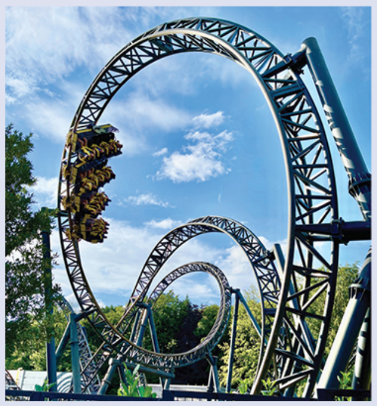
Hình 5.23 Các ống bán khuyên phát hiện gia tốc góc, giống như cảm giác trải nghiệm khi đi tàu lượn siêu tốc.
Nguồn: Jonny Gios trên Unsplash.
Các ống bán khuyên và cơ quan thạch nhĩ giúp hệ thống tiền đình biết được đầu đang ở đâu trong không gian và đang di chuyển thế nào. Sau đó, hệ thống tiền đình có thể sử dụng thông tin này để tác động lên chuyển động mắt nhằm giữ ánh nhìn ổn định. Sự ổn định ánh nhìn, chẳng hạn như tập trung vào một điểm cố định, thường được sử dụng trong yoga, đặc biệt là để tránh bị ngã trong các tư thế thăng bằng hoặc khi chuyển tiếp từ tư thế này sang tư thế khác. Hệ thống tiền đình đặc biệt quan trọng đối với khả năng kiểm soát thăng bằng khi đứng, và rối loạn chức năng của hệ thống này có thể dẫn đến các vấn đề về độ vững vàng (van Kordelaar et al., 2018).
Tại sao mọi người bị say tàu xe? Say tàu xe xảy ra khi hệ thống tiền đình và hệ thống thị giác bất đồng với nhau. Điều này có thể xảy ra khi ngồi trên thuyền vào một ngày nhiều gió. Chuyển động của sóng biển khiến chất dịch trong tai trong dịch chuyển, và các tế bào lông báo hiệu cho não rằng cơ thể đang chuyển động. Tuy nhiên, cơ thể đang ngồi yên trên thuyền chứ không tự di chuyển, nên các thụ thể thoi cơ lại báo cho não rằng cơ thể không chuyển động. Sự xung đột tín hiệu gửi về não này dẫn đến cảm giác buồn nôn.
Hình 5.24 Mọi người thường bị say sóng khi di chuyển trên
vùng nước động.
Nguồn: Ant Rozetsky trên Unsplash.
Điểm chính cần nhớ
Cảm thụ bản thể là nhận thức về vị trí và chuyển động của cơ thể. Các thụ thể cảm thụ bản thể bao gồm thoi cơ, cơ quan gân Golgi và thụ thể khớp.
Hệ thống tiền đình là trung tâm thăng bằng của cơ thể. Nó giúp não phát hiện chuyển động đầu và hỗ trợ ổn định ánh nhìn. Mỗi ống bán khuyên phát hiện một loại chuyển động xoay đầu khác nhau: gật lên xuống, lắc sang hai bên và nghiêng trái phải. Các cơ quan thạch nhĩ cảm nhận chuyển động tiến và lùi cũng như trọng lực. Tập yoga có thể cải thiện khả năng cảm thụ bản thể và thăng bằng.
Cảm thụ bản thể và yoga: Cũng giống như việc rèn luyện một kỹ năng, khả năng cảm thụ bản thể có thể được trau dồi thông qua việc lặp đi lặp lại. Yoga có thể giúp phát triển sự tự nhận thức về cơ thể, cải thiện khả năng biết được cơ thể đang ở đâu trong không gian, khả năng kiểm soát cơ bắp và giữ thăng bằng (Cherup et al., 2020). Một nghiên cứu phát hiện ra rằng tập tư thế Cái cây hai phút mỗi ngày giúp tăng cường khả năng thăng bằng tĩnh và động ở phụ nữ lớn tuổi (Solakoglu et al., 2021). Một nghiên cứu khác chỉ ra rằng tập Hatha yoga hai lần một tuần trong 12 tuần có thể cải thiện khả năng giữ thăng bằng ở những người mắc bệnh Parkinson, một tình trạng thường làm suy giảm khả năng thăng bằng (Elangovan et al., 2020). Tổng hợp lại, những phát hiện này cho thấy khả năng thăng bằng có thể cải thiện nhờ tập yoga, bao gồm cả ở người lớn tuổi và người mắc các rối loạn thần kinh.
Một cách khác để tăng cường khả năng cảm thụ bản thể là tập yoga khi nhắm mắt. Các tư thế cơ bản có thể trở nên khá khó khăn khi hệ thống thị giác bị tắt, buộc bộ não phải phụ thuộc nhiều hơn vào các hệ thống cảm thụ bản thể khác. Bạn cũng có thể thu được nhiều thông tin hữu ích khi tự quay phim lại cảnh mình tập một chuỗi tư thế với đôi mắt nhắm. Sau đó, bạn có thể xem lại đoạn phim để kiểm tra xem mình có đang di chuyển cơ thể đúng như mình nghĩ hay không.
Dưới đây là một chuỗi bài tập yoga mẫu giúp rèn luyện nhận thức cơ thể và khả năng giữ thăng bằng. Để tư thế dễ tiếp cận hơn, hãy thử nhìn chằm chằm vào một điểm nhất định trên sàn hoặc tường. Nếu muốn thử thách hơn, hãy thử nhắm mắt lại. Bạn cũng có thể làm chậm quá trình chuyển tiếp giữa các tư thế để tập trung vào việc kiểm soát và phối hợp cơ bắp.
CHUỖI TƯ THẾ YOGA MẪU CHO CẢM THỤ BẢN THỂ VÀ THĂNG BẰNG
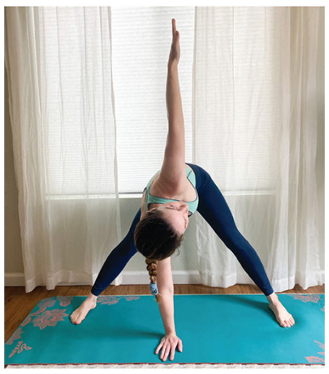
Hình 5.25 Tư thế Gập người chân rộng vặn mình.
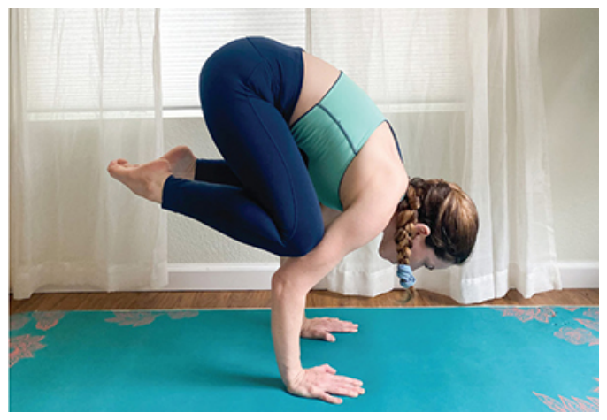
Hình 5.26 Tư thế Con quạ.
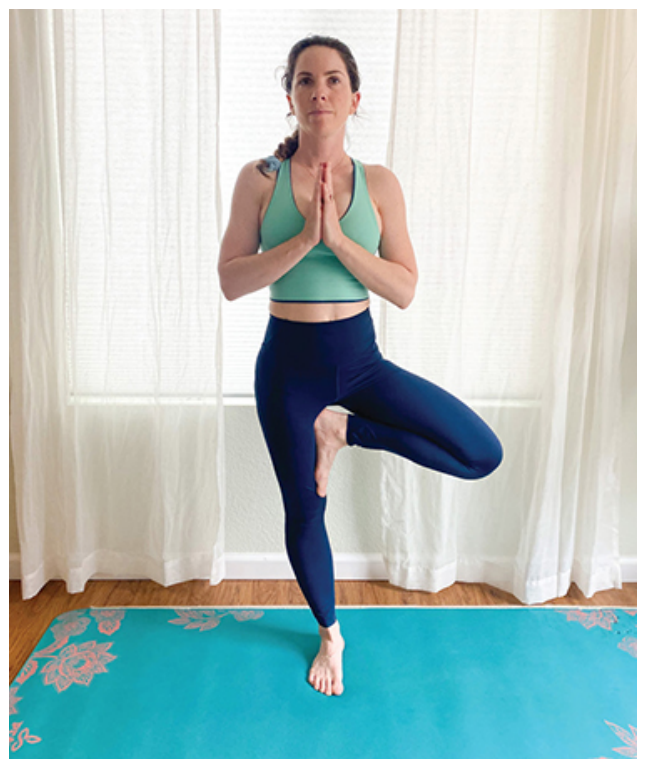
Hình 5.27 Tư thế Cái cây.
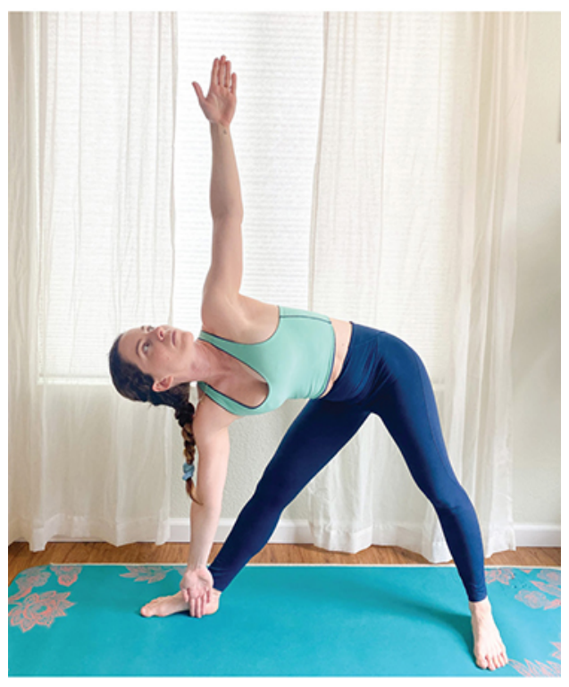
Hình 5.28 Tư thế Tam giác.
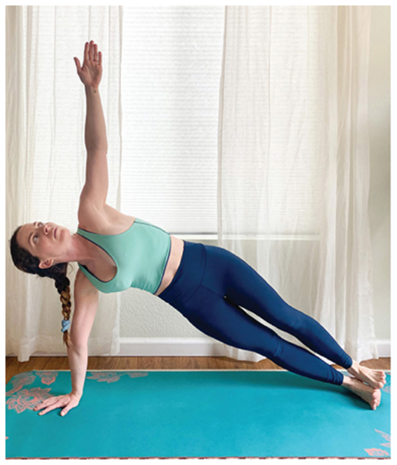
Hình 5.29 Biến thể tư thế Tấm ván nghiêng. Chân trên cũng có thể nhấc lên để tăng thêm thử thách thăng bằng.
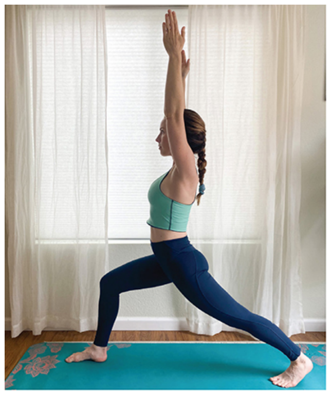
Hình 5.30 Tư thế Trường tấn cao.
TÀI LIỆU THAM KHẢO
Badlangana, N.L., Bhagwandin, A., Fuxe, K., & Manger, P.R., et al., 2007. Observations on the giraffe central nervous system related to the corticospinal tract, motor cortex and spinal cord: what difference does a long neck make? Neuroscience, 148(2), pp.522–534. Brinkman, C., 1981. Lesions in supplementary motor area interfere with a monkey’s performance of a bimanual coordination task. Neuroscience Letters, 27(3), pp.267–270. Cherup, N.P., Strand, K.L., Lucchi, L., Wooten, S.V., Luca, C., & Signorile, J.F., 2020. Yoga meditation enhances proprioception and balance in individuals diagnosed with Parkinson’s disease. Perceptual and Motor Skills, 128(1), pp.304–323. Dijkstra, B.W., Bekkers, E.M.J., Gilat, M., Rond, V.D., Hardwick, R.M., & Nieuwboer, A., 2020.
Functional neuroimaging of human postural control: a systematic review with meta-analysis. Neuroscience & Biobehavioral Reviews, 115, pp.351–362. Elangovan, N., Cheung, C., Mahnan, A., Wyman, J.F., Tuite, P., & Konczak, J., 2020. Hatha yoga training improves standing balance but not gait in Parkinson’s disease. Sports Medicine and Health Science, 2(2), pp.80–88.
Filler, A.G., Haynes, J., Jordan, S.E., Prager, J., et al., 2005. Sciatica of nondisc origin and piriformis syndrome: diagnosis by magnetic resonance neurography and interventional magnetic resonance imaging with outcome study of resulting treatment. Journal of Neurosurgery: Spine, 2(2), pp.99– 115. Fine, E.J., Ionita, C.C., & Lohr, L., 2002. The history of the development of the cerebellar examination. Seminars in Neurology, 22(4), pp.375–384. Freund, H.-J., & Hummelsheim, H., 1985. Lesions of premotor cortex in man. Brain, 108(3), pp.697–733. Hauber, W., 1998. Involvement of basal ganglia transmitter systems in movement initiation. Progress in Neurobiology, 56(5), pp.507–540. Johnson, E.O., Babis, G.C., Soultanis, K.C., & Soucacos, P.N., 2008. Functional neuroanatomy of proprioception. Journal of Surgical Orthopaedic Advances, 17(3), pp.159–165. Kwon, D., 2020. The mysterious, multifaceted cerebellum. BrainFacts.org. Available at:
https://www.brainfacts.org/brain-anatomy-and-function/anatomy/2020/the-mysteriousmultifaceted-cerebellum-120320 Matthews, P.B., 1964. Muscle spindles and their motor control. Physiological Reviews, 44(2), pp.219–288. Minai, M., 2014. Purkinje cells. The Embryo Project Encyclopedia. Available at: https://embryo.asu.edu/pages/purkinje-cells Mohanty, S., Pradhan, B., & Nagathna, R., 2014. The effect of yoga practice on proprioception in congenitally blind students. British Journal of Visual Impairment, 32(2), pp.124–135. Muzio, M.R., & Cascella, M., 2021. Histology, Axon. In: StatPearls [Internet]. Treasure Island (FL):
StatPearls Publishing; 2022 Jan-. Available at: https://www.ncbi.nlm.nih.gov/books/NBK554388/ Sanes, J.N., & Donoghue, J.P., 2000. Plasticity and primary motor cortex. Annual Review of
Neuroscience, 23(1), pp.393–415. Schwartz, A.B., 2016. Movement: how the brain communicates with the world. Cell, 164(6), pp.1122–1135. Solakoglu, O., Dogruoz Karatekin, B., Yumusakhuylu, Y., Mesci, E., & Icagasioglu, A., 2021. The effect of yoga asana “Vrksasana (tree pose)” on balance in patients with postmenopausal osteoporosis. American Journal of Physical Medicine & Rehabilitation, 101(3), pp.255–261. The Brain from Top to Bottom, 2022. The Axons Entering and Leaving the Motor Cortex. McGill
University. Available at: https://thebrain.mcgill.ca/flash/i/i_06/i_06_cl/i_06_cl_mou/i_06_cl_mou.html van Kordelaar, J., Pasma, J.H., Cenciarini, M., Schouten, A.C., Kooij, H.V.D., & Maurer, C., 2018.
The reliance on vestibular information during standing balance control decreases with severity of vestibular dysfunction. Frontiers in Neurology, 9, p.371. Verwey, W.B., Lammens, R., & Honk, J. van, 2002. On the role of the SMA in the discrete sequence production task: a TMS study. Neuropsychologia, 40(8), pp.1268–1276. Yoga Journal, 2021. What’s so sacred about the number 108? Yoga Journal. Available at:
https://www.yogajournal.com/practice/yoga-sequences/the-number-108